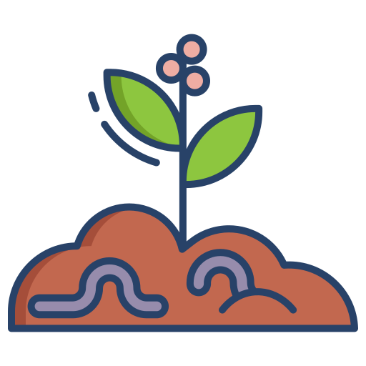
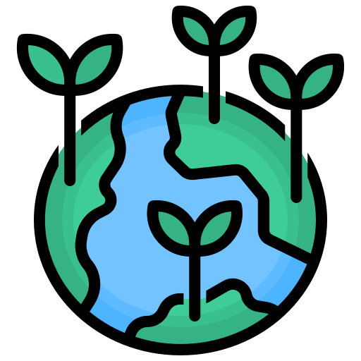
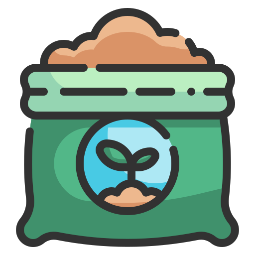
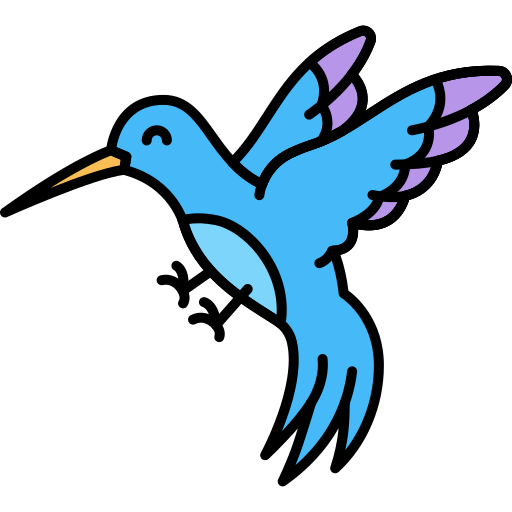

Cultivando comunidad, cosechando vida
Somos un grupo de vecinos de Hayuelos que recuperamos el suelo, aprovechamos nuestros residuos y aprendemos juntos a cultivar de forma sana y sostenible.
Únete a la comunidad
Somos un grupo de vecinos de Hayuelos que recuperamos el suelo, aprovechamos nuestros residuos y aprendemos juntos a cultivar de forma sana y sostenible.
Únete a la comunidad
Aprovechamos los residuos orgánicos de la comunidad para transformarlos en abono natural.

Enriquecemos y recuperamos el suelo con técnicas agroecológicas y respetuosas.

Protegemos abejas, colibríes y toda la vida que convive con nuestra huerta.

Reutilizamos y cerramos el ciclo de los residuos para cuidar el planeta.

Producimos nuestro propio fertilizante sin químicos dañinos.

Somos hogar de aves y polinizadores que equilibran el ecosistema.

Cuidamos a las abejas, indispensables para la polinización y la vida.

Nos enseñamos mutuamente sobre agricultura y huertas comunitarias.

Somos un grupo de vecinos de la vereda de Hayuelos que nos unimos con un propósito claro: tratar nuestros residuos, recuperar el suelo y aprovechar esos residuos para cuidar la tierra.
Fomentamos el compostaje, el uso responsable de los recursos y aprendemos juntos de agricultura y huertas comunitarias. Producimos alimentos sanos y estrechamos los lazos de nuestra comunidad.
Ver nuestras actividades